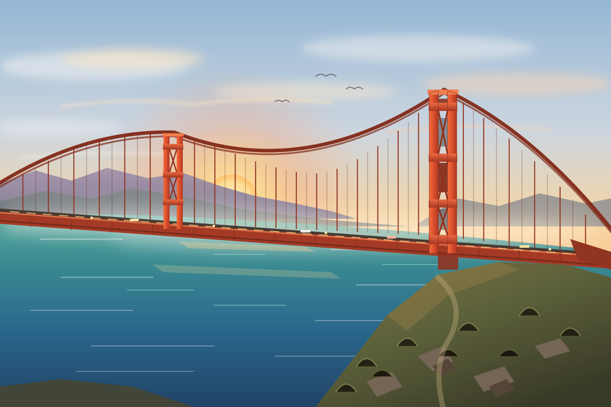

SVG illustration

12.29 seconds · $0.0035389 · 7,209 tokens
Stronger framing and layered color. Some vertical cables stop below the main cable.
Open original SVG
Three.js scene
12.34 seconds · $0.0034547 · 7,107 tokens
Drag to orbit · scroll to zoom. Initial camera crops the near tower. Flat fog planes have visible edges.
Open interactive scene